Pignoramento dello stipendio sul conto corrente: quali limiti nel 2026
Quando lo stipendio viene accreditato sul conto corrente, le regole del pignoramento cambiano rispetto al prelievo diretto in busta paga. La legge distingue tra somme già presenti …
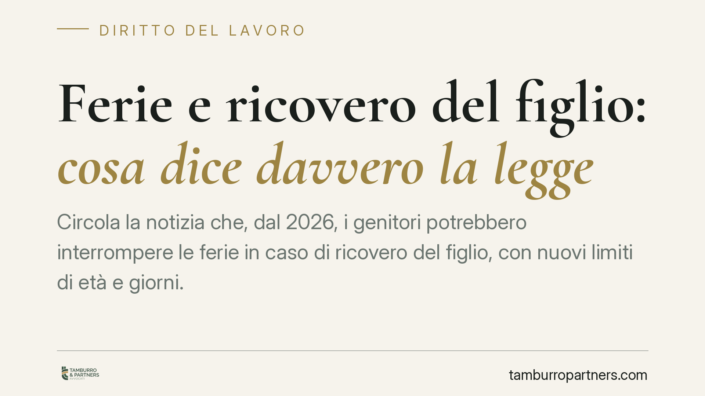
Ferie e ricovero del figlio: cosa dice davvero la legge
Circola la notizia che, dal 2026, i genitori potrebbero interrompere le ferie in caso di ricovero del figlio, con nuovi limiti di età e giorni. Prima di darne conto come diritto ce…
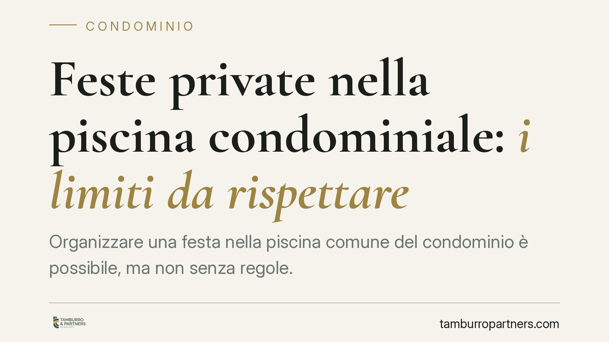
Feste private nella piscina condominiale: i limiti da rispettare
Organizzare una festa nella piscina comune del condominio è possibile, ma non senza regole. L'uso delle parti comuni incontra limiti precisi: il rispetto della pari fruizione da pa…
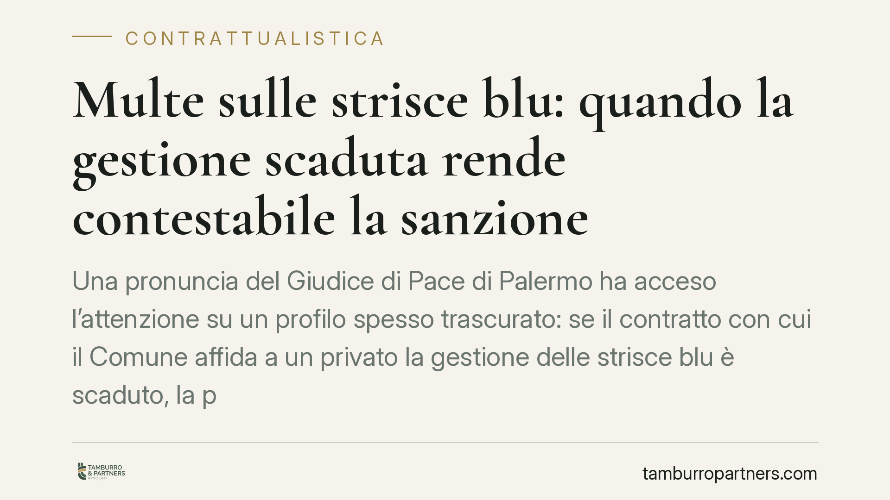
Multe sulle strisce blu: quando la gestione scaduta rende contestabile la sanzione
Una pronuncia del Giudice di Pace di Palermo ha acceso l'attenzione su un profilo spesso trascurato: se il contratto con cui il Comune affida a un privato la gestione delle strisce…
Socio di Srl e iscrizione INPS artigiani e commercianti: quando scatta l'obbligo
La gestione INPS artigiani e commercianti non segue il possesso della quota, ma l'attività di lavoro. Il socio di Srl è tenuto all'iscrizione solo se partecipa personalmente e abit…
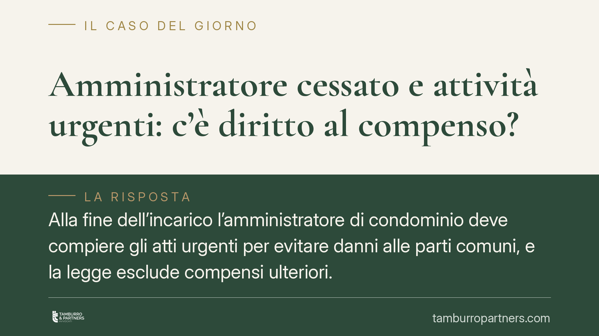
Amministratore cessato e attività urgenti: c'è diritto al compenso?
Alla fine dell'incarico l'amministratore di condominio deve compiere gli atti urgenti per evitare danni alle parti comuni, e la legge esclude compensi ulteriori. La regola vale per…
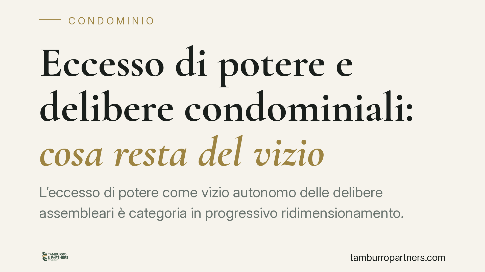
Eccesso di potere e delibere condominiali: cosa resta del vizio
L'"eccesso di potere" come vizio autonomo delle delibere assembleari è categoria in progressivo ridimensionamento. La giurisprudenza tende a ricondurre i vizi delle decisioni condo…
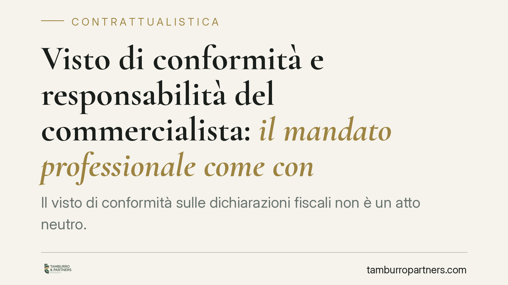
Visto di conformità e responsabilità del commercialista: il mandato professionale come confine
Il visto di conformità sulle dichiarazioni fiscali non è un atto neutro. La Cassazione tributaria ricorda che il professionista può concorrere nella responsabilità per le sanzioni …
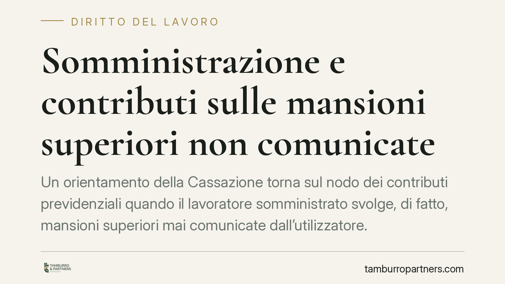
Somministrazione e contributi sulle mansioni superiori non comunicate
Un orientamento della Cassazione torna sul nodo dei contributi previdenziali quando il lavoratore somministrato svolge, di fatto, mansioni superiori mai comunicate dall'utilizzator…
Diploma falso e prestazione utile: quando manca il danno erariale
Un dipendente pubblico assunto con un diploma falso ma che ha svolto realmente le proprie mansioni può non arrecare danno erariale alla Pubblica Amministrazione. La distinzione tra…
Entrare in casa prima del rogito: rischi e tutele del preliminare ad effetti anticipati
Occupare l'immobile prima del rogito notarile è prassi diffusa, ma non priva di insidie. Chi entra in casa dopo il solo preliminare non è ancora proprietario: la giurisprudenza qua…
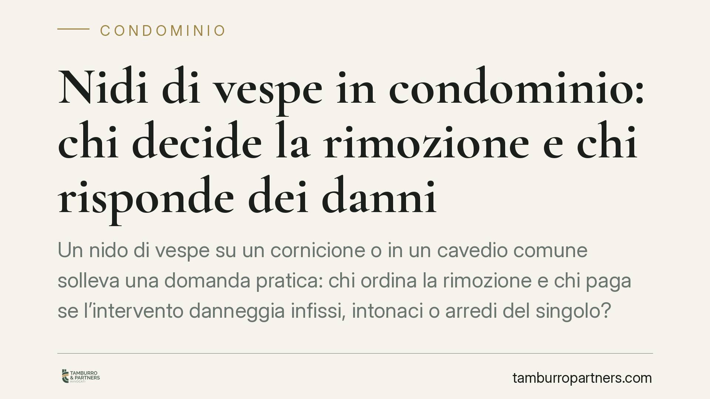
Nidi di vespe in condominio: chi decide la rimozione e chi risponde dei danni
Un nido di vespe su un cornicione o in un cavedio comune solleva una domanda pratica: chi ordina la rimozione e chi paga se l'intervento danneggia infissi, intonaci o arredi del si…
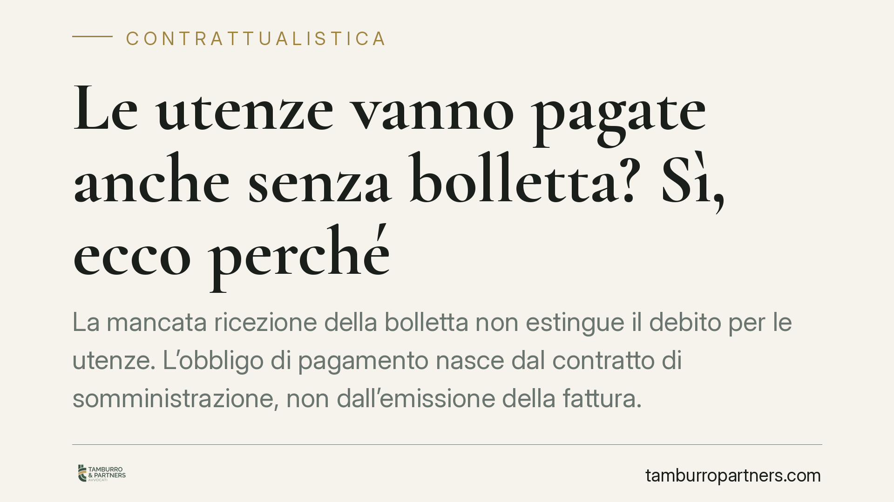
Le utenze vanno pagate anche senza bolletta? Sì, ecco perché
La mancata ricezione della bolletta non estingue il debito per le utenze. L'obbligo di pagamento nasce dal contratto di somministrazione, non dall'emissione della fattura. Restano …
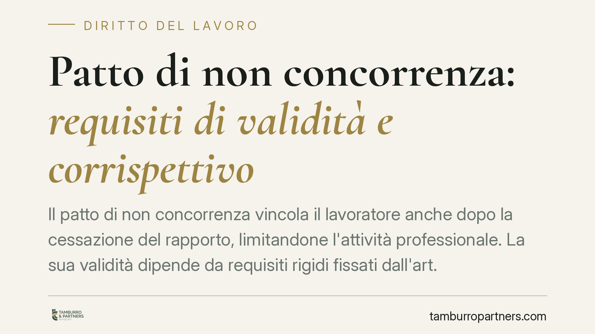
Patto di non concorrenza: requisiti di validità e corrispettivo
Il patto di non concorrenza vincola il lavoratore anche dopo la cessazione del rapporto, limitandone l'attività professionale. La sua validità dipende da requisiti rigidi fissati d…
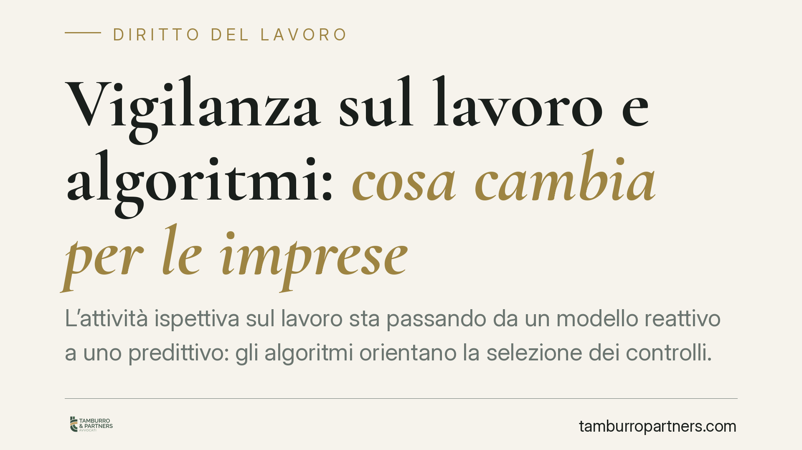
Vigilanza sul lavoro e algoritmi: cosa cambia per le imprese
L'attività ispettiva sul lavoro sta passando da un modello reattivo a uno predittivo: gli algoritmi orientano la selezione dei controlli. Ma il provvedimento resta un atto umano, m…
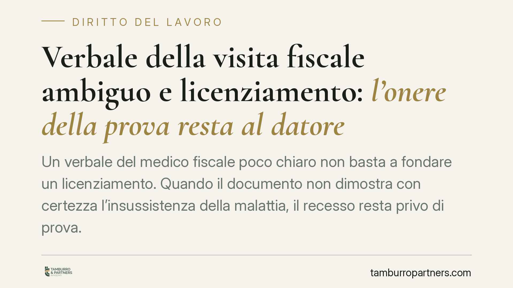
Verbale della visita fiscale ambiguo e licenziamento: l'onere della prova resta al datore
Un verbale del medico fiscale poco chiaro non basta a fondare un licenziamento. Quando il documento non dimostra con certezza l'insussistenza della malattia, il recesso resta privo…
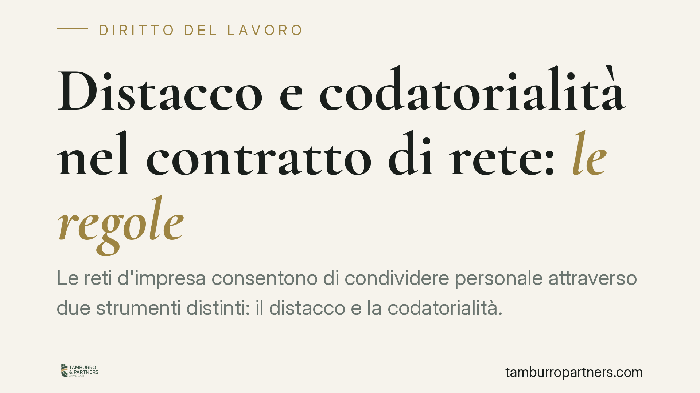
Distacco e codatorialità nel contratto di rete: le regole
Le reti d'impresa consentono di condividere personale attraverso due strumenti distinti: il distacco e la codatorialità. Le regole cambiano a seconda dello strumento scelto, con ef…
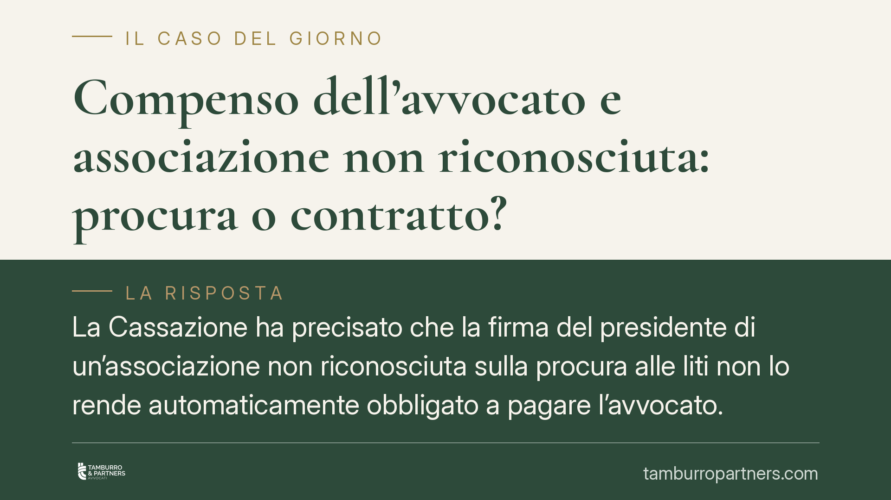
Compenso dell'avvocato e associazione non riconosciuta: procura o contratto?
La Cassazione ha precisato che la firma del presidente di un'associazione non riconosciuta sulla procura alle liti non lo rende automaticamente obbligato a pagare l'avvocato. Per f…
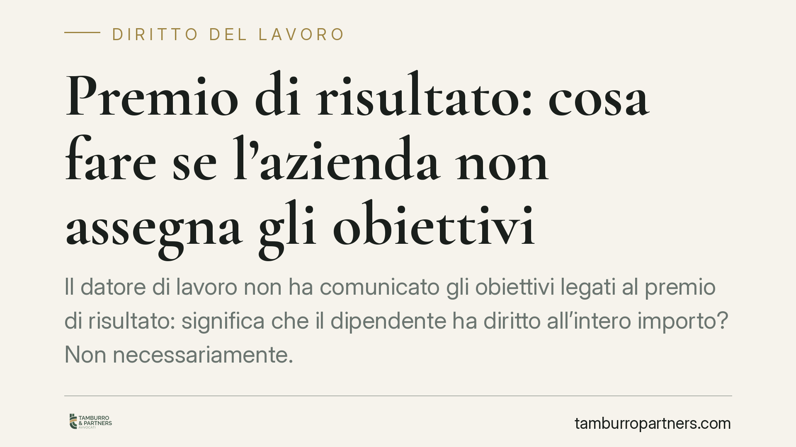
Premio di risultato: cosa fare se l'azienda non assegna gli obiettivi
Il datore di lavoro non ha comunicato gli obiettivi legati al premio di risultato: significa che il dipendente ha diritto all'intero importo? Non necessariamente. La giurisprudenza…
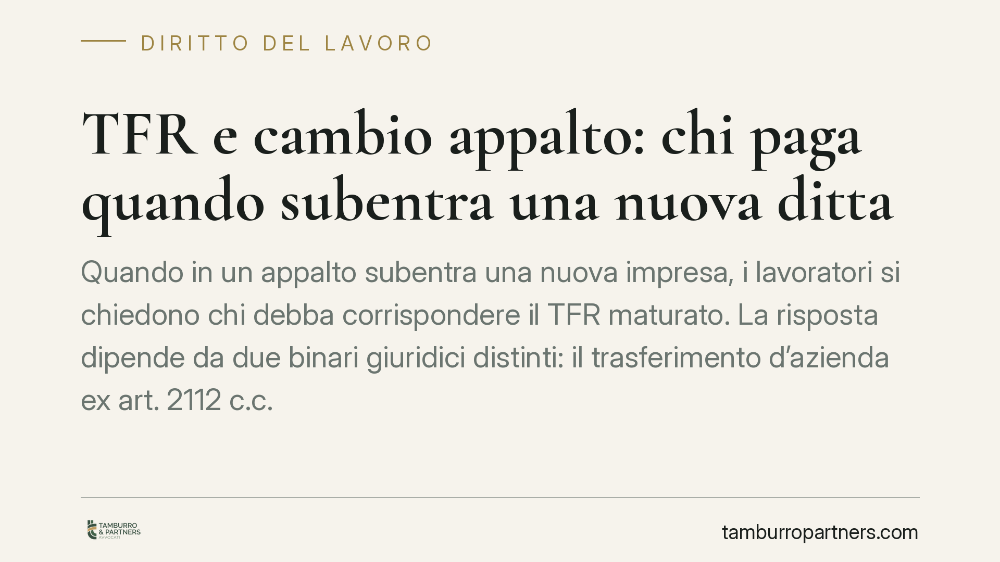
TFR e cambio appalto: chi paga quando subentra una nuova ditta
Quando in un appalto subentra una nuova impresa, i lavoratori si chiedono chi debba corrispondere il TFR maturato. La risposta dipende da due binari giuridici distinti: il trasferi…
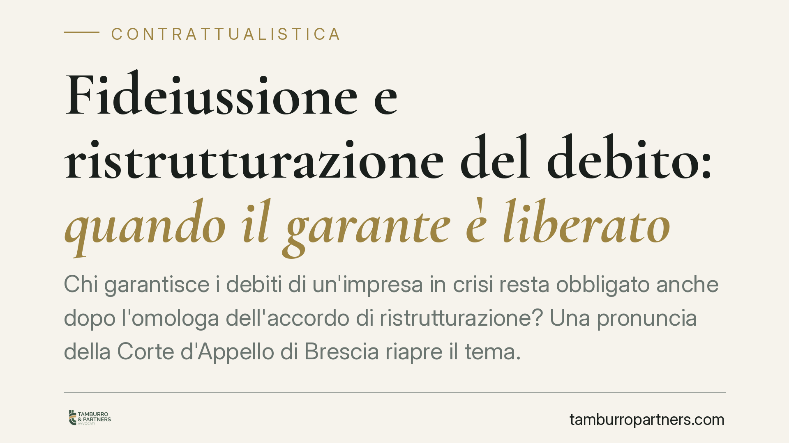
Fideiussione e ristrutturazione del debito d'impresa: quando il garante è liberato
Chi garantisce i debiti di un'impresa in crisi resta obbligato anche dopo l'omologa dell'accordo di ristrutturazione? Una pronuncia della Corte d'Appello di Brescia riapre il tema.…
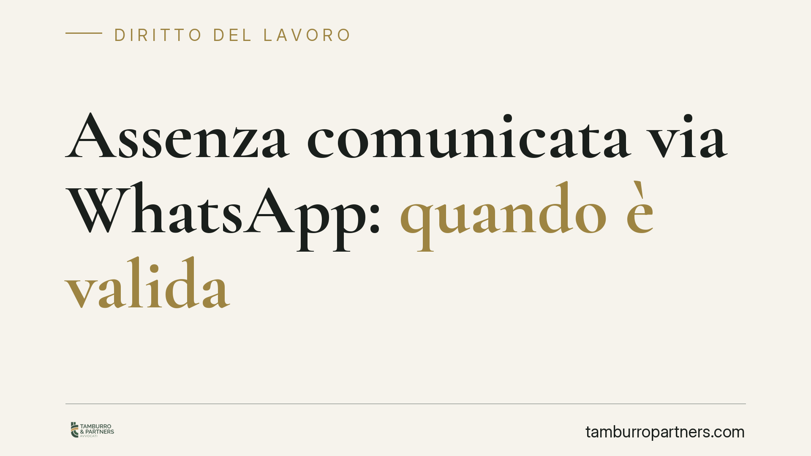
Assenza dal lavoro comunicata via WhatsApp: quando è valida
Un messaggio WhatsApp può bastare a comunicare validamente l'assenza dal lavoro. Lo ha stabilito il Tribunale di Udine: se il datore riceve l'informazione e riorganizza il servizio…
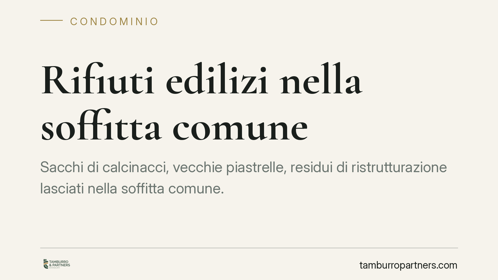
Rifiuti edilizi nella soffitta comune: chi paga lo smaltimento?
Sacchi di calcinacci, vecchie piastrelle, residui di ristrutturazione lasciati nella soffitta comune. Quando nessuno confessa, chi deve pagare la rimozione? La legge impone al cond…

Furto nelle scale del condominio: quando scatta l'aggravante dell'abitazione
Il furto commesso nelle scale o nell'atrio del condominio è punito come il furto in casa? La questione ruota sulla nozione di 'privata dimora' dell'art. 624-bis c.p. La giurisprude…

Esenzione IMU per gli enti del Terzo Settore: le condizioni
L'esenzione IMU per gli immobili degli enti del Terzo Settore non è automatica. La legge la subordina a tre condizioni che devono coesistere: chi possiede l'immobile, come lo usa e…

Compenso extra dell'amministratore approvato a consuntivo: perché è nullo
La Cassazione torna sul compenso dell'amministratore di condominio: l'aumento deciso in sede di approvazione del bilancio consuntivo è nullo. Serve un accordo chiaro e scritto fin …

Ombrellone sul balcone: le regole di condominio per evitare liti
Un ombrellone sul balcone sembra un dettaglio estivo innocuo. In condominio, però, può innescare contestazioni su decoro architettonico, veduta del vicino e sicurezza. Sapere quand…

Pignoramento della pensione nel 2026: limiti e tutele
Chi percepisce una pensione e ha un debito si chiede quanto possa essergli sottratto. La risposta cambia a seconda del punto in cui avviene il prelievo: presso l'ente previdenziale…

Patto di prova: durata, forma e vincoli dopo la riforma
Il patto di prova consente a datore e lavoratore di verificare la reciproca convenienza del rapporto prima che diventi definitivo. Il D.Lgs. 104/2022 e la legge 203/2024 hanno ridi…

Partita IVA o lavoro dipendente: come si riconosce la differenza
Avere una partita IVA non basta a escludere un rapporto di lavoro subordinato. Per i giudici conta la sostanza: se il committente esercita un potere direttivo, gerarchico e organiz…